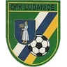

Tabuľky
Ročník 2026/27. Poradie podľa Sportnetu, náš tím je zvýraznený.
A-mužstvo
Stránka tímuVI. liga Severovýchod
| # | Tím | Z | V | R | P | Skóre | B |
|---|---|---|---|---|---|---|---|
| 1 | ŠC Chynorany | 15 | 12 | 3 | 0 | 39:13 | 39 |
| 2 | 15 | 10 | 2 | 3 | 30:12 | 32 | |
| 3 | 15 | 7 | 4 | 4 | 46:19 | 25 | |
| 4 | 15 | 7 | 4 | 4 | 30:18 | 25 | |
| 5 | 15 | 7 | 3 | 5 | 32:24 | 24 | |
| 6 | 15 | 7 | 3 | 5 | 44:22 | 24 | |
| 7 | 15 | 7 | 2 | 6 | 17:18 | 23 | |
| 8 | Slovan Šimonovany-Partizánske | 15 | 7 | 0 | 8 | 19:26 | 21 |
| 9 | 15 | 6 | 2 | 7 | 32:30 | 20 | |
| 10 |  OFK Ludanice | 15 | 6 | 2 | 7 | 26:33 | 20 |
| 11 | 15 | 5 | 3 | 7 | 22:38 | 18 | |
| 12 | 15 | 5 | 3 | 7 | 33:40 | 18 | |
| 13 | 15 | 4 | 4 | 7 | 25:34 | 16 | |
| 14 | 15 | 4 | 3 | 8 | 25:41 | 15 | |
| 15 | 15 | 4 | 3 | 8 | 19:32 | 15 | |
| 16 | 15 | 1 | 1 | 13 | 16:55 | 4 |
Mladší žiaci U13
Stránka tímuIV. liga mladších žiakov U13
| # | Tím | Z | V | R | P | Skóre | B |
|---|---|---|---|---|---|---|---|
| 1 | 9 | 8 | 1 | 0 | 38:19 | 25 | |
| 2 | OFK Ludanice | 9 | 7 | 1 | 1 | 42:13 | 22 |
| 3 | 9 | 7 | 0 | 2 | 35:22 | 21 | |
| 4 | 9 | 6 | 0 | 3 | 49:29 | 18 | |
| 5 | 9 | 4 | 0 | 5 | 50:27 | 12 | |
| 6 | 9 | 4 | 0 | 5 | 24:26 | 12 | |
| 7 | 9 | 4 | 0 | 5 | 36:44 | 12 | |
| 8 | 9 | 3 | 0 | 6 | 23:29 | 9 | |
| 9 | 9 | 1 | 0 | 8 | 16:59 | 3 | |
| 10 | 9 | 0 | 0 | 9 | 13:58 | 0 | |
| 11 | OFK Krnča | 0 | 0 | 0 | 0 | 0:0 | 0 |
Prípravka U11
Stránka tímuIII. liga prípraviek U11
| # | Tím | Z | V | R | P | Skóre | B |
|---|---|---|---|---|---|---|---|
| 1 | 10 | 10 | 0 | 0 | 162:27 | 30 | |
| 2 | 10 | 8 | 0 | 2 | 88:62 | 24 | |
| 3 | 10 | 5 | 0 | 5 | 48:65 | 15 | |
| 4 | 10 | 4 | 1 | 5 | 52:50 | 13 | |
| 5 | 10 | 2 | 0 | 8 | 31:128 | 6 | |
| 6 | 10 | 0 | 1 | 9 | 19:68 | 1 |
U9: prípravka hrá bez tabuľky.